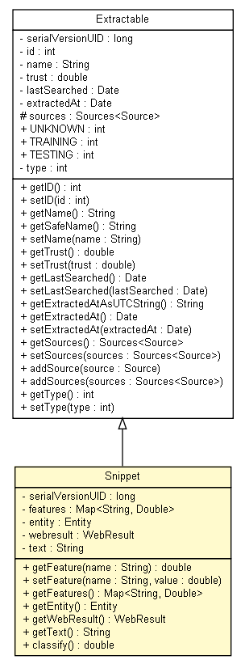

tud.iir.knowledge
Class Snippet

java.lang.Object
 tud.iir.knowledge.Extractable
tud.iir.knowledge.Snippet
tud.iir.knowledge.Extractable
tud.iir.knowledge.Snippet
- All Implemented Interfaces:
- java.io.Serializable
public class Snippet
- extends Extractable
The knowledge unit snippet.
- See Also:
- Serialized Form
| Methods inherited from class tud.iir.knowledge.Extractable |
addSource, addSources, getExtractedAt, getExtractedAtAsUTCString, getID, getLastSearched, getName, getSafeName, getSources, getTrust, getType, setExtractedAt, setID, setLastSearched, setName, setSources, setTrust, setType |
| Methods inherited from class java.lang.Object |
clone, equals, finalize, getClass, hashCode, notify, notifyAll, toString, wait, wait, wait |
serialVersionUID
private static final long serialVersionUID
- See Also:
- Constant Field Values
features
private java.util.Map<java.lang.String,java.lang.Double> features
entity
private Entity entity
webresult
private WebResult webresult
text
private java.lang.String text
Snippet
public Snippet(Entity entity,
WebResult webresult,
java.lang.String text)
getFeature
public double getFeature(java.lang.String name)
setFeature
public void setFeature(java.lang.String name,
double value)
getFeatures
public java.util.Map<java.lang.String,java.lang.Double> getFeatures()
getEntity
public Entity getEntity()
getWebResult
public WebResult getWebResult()
getText
public java.lang.String getText()
classify
public double classify()
- Calculate the regression value using the SnippetClassifier.
- Returns:
- Regression value.